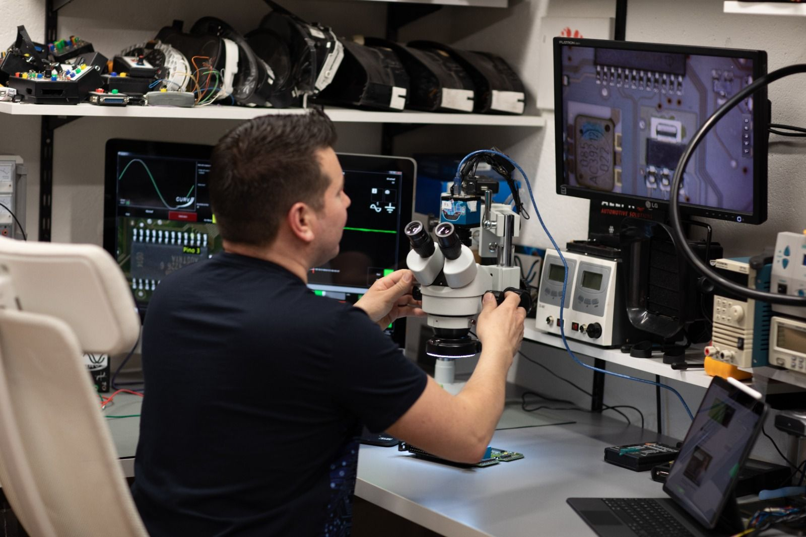

Se trata de la única comunidad del mercado hispano de mecánicos y electromecánica
que desean conocer una metodología efectiva para:
Diagnosticar de forma precisa las averías electrónicas.
Analizar toda la situación para encontrar la mejor solución para tus clientes.
Reparar y comprobar el correcto funcionamiento de las unidades.
